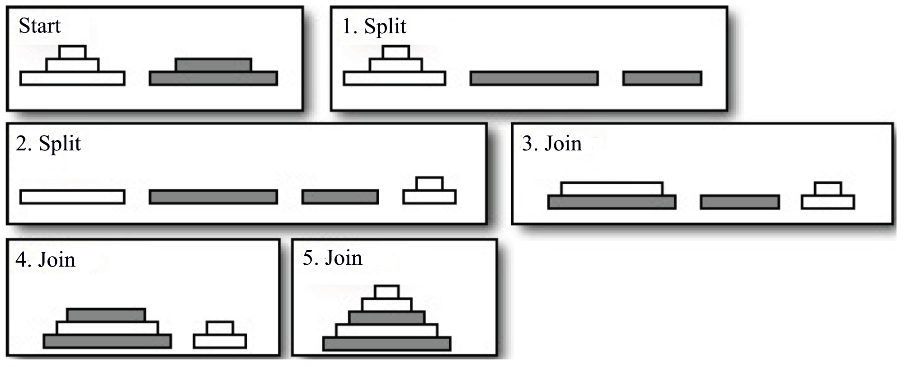

ACM-ICPC World Finals 2012 · Problem K
The Plate Shipping Company is an Internet retailer that, as their name suggests, exclusively sells plates. They pride themselves in offering the widest selection of dinner plates in the universe from a large number of manufacturers.
In a recent cost analysis the company has discovered that they spend a large amount of money on packing the plates for shipment. Part of the reason is that plates have to be stacked before being put into shipping containers. And apparently, this is taking more time than expected. Maybe you can help.
A shipment of plates consists of plates from several manufacturers. The plates from each manufacturer come stacked, that is, each arranged in a single stack with plates ordered by size (the smallest at the top, the largest at the bottom). We will call such a stack properly ordered. To ship all these plates, you must combine them into a single stack, again properly ordered. To join the manufacturers’ stacks into a single stack, two kinds of operations are allowed:
Note that a portion of any stack may never be put directly on top of another stack. It must first be split and then the split portion must be joined with the other stack. Given a collection of stacks, you have to find the minimum number of operations that transforms them into a single stack. The following example corresponds to the sample input, and shows how two stacks can be transformed to a single stack in five operations:

Each test case starts with a line containing a single integer n (1 ≤ n ≤ 50), the number of stacks that have to be combined for a shipment. This is followed by n lines, each describing a stack. These lines start with an integer h (1 ≤ h ≤ 50), the height of the stack. This number is followed by h positive integers that give the diameters of the plates, from top to bottom. All diameters are at most 10 000. These numbers will be in non-decreasing order.
For each test case, display the case number and the minimum number of operations (splits and joins) that have to be performed to combine the given stacks into a single stack.
2 3 1 2 4 2 3 5 3 4 1 1 1 1 4 1 1 1 1 4 1 1 1 1
Case 1: 5 Case 2: 2